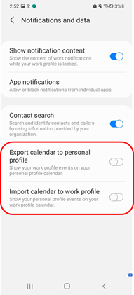
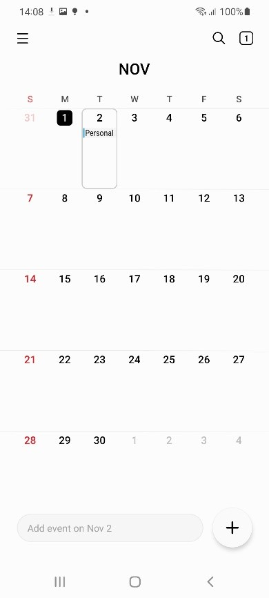
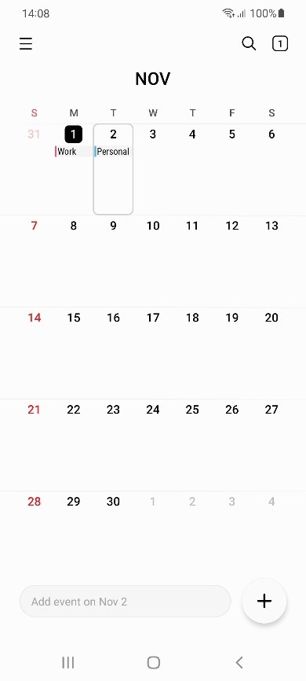
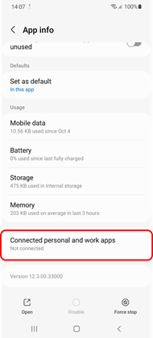
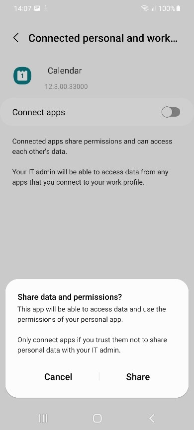

Knox SDK frequently asked questions — General
The Samsung Knox SDK is a consolidation of these Knox SDKs:
- Knox Standard SDK
- Knox Premium SDK
- Knox Customization SDK
- Knox ISV SDK
- Knox UCM SDK
- Knox VPN SDK
With the Samsung Knox SDK, there is one SDK package to download, one JAR library to import, one API reference documenting all methods, and one Developer Guide describing how to use all the SDK features. In addition to simplifying the developer experience, the Samsung Knox SDK also offers these improvements:
-
Namespace — All Samsung Knox SDK packages, intents, and permissions now have names in a single namespace: com.samsung.android.knox. Unifying the namespace simplifies the coding, troubleshooting, and support. Previously, there were two namespaces, which you should no longer use:
-
android.app.enterprise — this one is in the Google namespace
-
com.sec.enterprise/vpn — this one is in a lesser used Samsung Electronics namespace
-
-
Structure — API methods have been re-organized to better reflect their function. The API methods that were in the generic class called MiscPolicy have been moved into more appropriate classes. Some classes have been renamed. For example, Attestation is now called AttestationPolicy for more consistency with other class names.
-
Deprecation — API methods that were not being used or were duplicated across SDKs have been deprecated. This is to simplify the API set and ease usability. Although the deprecated API methods will still work with Samsung Knox SDK, we will no longer test them with future releases. For a list of these deprecated API methods, see Deprecated API methods.
-
Version — As the various replaced SDKs had different version numbers, the new consolidated Samsung Knox SDK identifies its release using its Android API level. The first Samsung Knox SDK release uses API level 24, which corresponds with Android v7 or Nougat.
Updating an app that used the previous SDKs (Knox Standard, Knox Premium, Knox Customization, etc.) is fairly straightforward. To see how it’s done, browse the Samsung Knox SDK Migration Guide.
You can find the Knox white papers in the Knox Admin Guide.
See Knox version mapping for the most up to date comparison. To check the SDK version on your device, click Settings > About Phone > Software > Information > Knox > Version.
You can check the type of firmware by using this adb shell command: C:\Program Files\Android\android-sdk\platform-tools>adb shell
- -shell@android:/ $ means your device firmware is a commercial build.
- -shell@android:/ means your device firmware is an engineer build.
No, we do not provide pre-release binaries to developers.
There are three types of deprecated API methods:
-
Replaced — This API method has been replaced by another. In the API Reference, these are indicated as follows:
public boolean addHomeShortcut (String pkgName) This method is deprecated. Use addHomeShortcut(String, String) -
Obsoleted — This API method is no longer used, but might still be backwards compatible. In the API Reference, these are indicated as follows:
public int getDeviceKnoxId () This method is deprecated. -
Not supported — This API method will no longer work, and should be removed from apps.
We do not recommend that you use deprecated API methods. Although they may continue to be backwards compatible, there may be unexpected or unwanted behavior. Always replace the API methods that are no longer supported. Check Deprecated API methods and API reference for these methods.
After an API deprecation is announced, Samsung offers three stages of support:
-
Newly Deprecated — When an API is deprecated in a new Knox version, it will work normally for one year after the deprecation announcement. During this time, Samsung provides full technical support.
-
One year after deprecation — The deprecated API continues to be available, but satisfactory operation is not guaranteed. Samsung doesn’t fix any bugs or compatibility issues.
-
Two years after deprecation — The deprecated API may be removed from the SDK. Even if it is available, it might not behave as expected. We recommend that you look for alternative solutions when we announce the API deprecation. We suggest replacing the API method with alternatives within the first year after the deprecation as we provide full support for the deprecated APIs during that time.
To see the full list of deprecated API methods, see Deprecated API methods.
As mentioned in What is a deprecated API method, APIs are usually deprecated when they are either replaced by another method, becomes obsolete, or is no longer supported. With the Knox SDK v3.8, some big API methods are deprecated for the following reasons:
| Class name | Reason for deprecation |
|---|---|
| RCPPolicy | It is a feature of the Knox legacy container, which is supported up to Samsung S10 device models. |
| BasePasswordPolicy | For partner’s efficient development and maintenance, Samsung decided to harmonize it with Google. |
| SystemManager | DSC (Deep Settings Customization) of KSP currently supports (or will support) this feature, so DSC support of API is deprecated. |
| AdvancedRestrictionPolicy | For partner’s efficient development and maintenance, Samsung decided to harmonize it with Google. |
| WifiPolicy | Mainline related feature |
To see the full list of deprecated API methods, see Deprecated API methods.
Credentials refer to:
-
Certificates — These identify a person or company that owns a device, app, website, etc. The certificate includes the public key used to encrypt data, and the signature of the authority that issued the certificate, so that the receiver can verify that the certificate is valid.
-
Private Keys — These are used to decrypt received data, for example, the signature on a certificate or private data received over a VPN.
Credentials need to be kept secret to prevent malicious parties from stealing identities and hijacking sensitive data.
The Knox TIMA Client Certificate Manager (CCM) allows a mobile device to simulate a smart card, and be used with NFC smart card readers. Its Keystore resides on an eSE (embedded Secure Element) on an NFC chip embedded inside a mobile device.
Android apps manage the Knox TIMA CCM using the API class: com.samsung.android.knox.keystore.ClientCertificateManager. Because this is a premium feature, end customers need a paid KLM (Knox) license to use it. Enterprises can get KLM licenses through Knox resellers. As a developer, you can get a free development Knox Platform for Enterprise license through the Knox Developer Portal to test the feature before deploying it. For the most up to date license information, see the About licenses page.
Currently, Samsung only provides Knox supported devices running Android or Tizen. For a full list of Knox supported device, see the Knox Portal. Read about Knox Android SDK and Knox Tizen SDK for detailed information about the features of these SDKs.
All the APIs for controlling hardware features can be found in Knox SDK under the RestrictionPolicy class.
Part of the hardware features that can be managed inside container are listed below:
- Camera
- Screen capture
- Microphone
- Video record
- Clipboard
- Power button
- Home button
To use an API, your device must support the SDK version in which the API was implemented or later. To check the Knox SDK version that is supported on your device, you can use this API method. You can find the SDK version from which the API is supported in Javadoc. For example, the allowDeveloperMode() API method is available since MDM 5.0. If the value returned on your device is 5.0 or later, you can successfully use the allowDeveloperMode() API method.
Yes, Google Play — along with Samsung Apps or private app stores — can be used to deploy Knox apps.
The Lightweight Directory Access Protocol (LDAP) is an Internet protocol that apps such as Contact, Email, and S Planner can use to look up personal information from a network server, to synch information across multiple devices. In the case of Email, when a user tries to type an email address into a recipient field, for example, the Email app can try to auto-complete the address based on the retrieved personal information.
The Knox SDK provides these classes:
-
LDAPAccount — to construct a data type with LDAP account information: user name, password, host, and so on.
-
LDAPAccountPolicy — to create the LDAP account on the device.
Note
This class does not push or enforce LDAP security policies on the device.
Third-party apps can also make use of LDAP information after modifying the app code to work with LDAP. For any collaboration queries, contact Knox support.
Enterprise data can be leaked to the personal container via an unauthorized third party keyboard, as keyboards are shared between the personal and work spaces. To avoid this, Samsung Knox requires users to use the system keyboard by default. third party keyboards can only be used if they are first added to an allowlist by an IT admin.
You can use the setPermittedInputMethods() method from the Android DevicePolicyManager interface to allow third party keyboards.
In an upcoming update, users will be able to select any keyboard by default. It will be up to IT admins to set restrictions on third party keyboard use through their EMM.
If you are using Android’s Build.getSerial() or Knox’s DeviceInventory.getSerialNumber() to obtain the device serial number, please refer to the following summary of the changes based on device model and operating system.
| Device | ril.serialnumber | ro.serialno | Build.getSerial() | DeviceInventory.getSerialNumber() |
|---|---|---|---|---|
| Devices released prior to January 2019, including S9, Note9, Tab S4. | Android 10 (deprecated) --- 11 digit value | 16 digit value | 16 digit value | 11 digit value |
| Devices released on or after January 2019, including S10, Tab A 10.1 and newer. |
Android 10 (deprecated) --- 11 digit value Android 11 --- Removed |
11 digit value | 11 digit value |
Android 10 (deprecated in Knox API level 30) --- 11 digit value Android 11 (Knox API level 33) --- "00000000000" |
Please refer here for a list of device release dates.
You would need to use the proprietary APIs provided by storage providers for their storage hardware. For more support, try the storage provider support or resources on their website.
Universal Credential Management provides access to a framework that eases the storage of digital credentials across several possible storage hardware on a mobile device. It simplifies deployment for app developers, who no longer need to use vendor-specific APIs to store credentials on their hardware. By using the UCM APIs, app developers can easily use new credential storage hardware with minimal or no code changes. Note that Universal Credential Management works only on Qualcomm and Exynos chip devices.
Samsung Calendar data sharing menu (export calendar to Personal Profile and import calendar to Work Profile) is removed in Knox SDK 3.8
Knox provided bidirectional calendar data sharing between personal and work profile through the following settings menu:
Settings > Work Profile > Settings > Notifications and data > Export calendar to personal profile / Import calendar to work profile
However Google introduced a similar feature called Connected work and personal apps in Android 11.
So in Knox SDK 3.8, Knox settings menu is removed to avoid feature conflicts, and Samsung calendar app supports the Connected work and personal apps feature.
Personal to Work Profile data sharing is allowed but Work to Personal Profile data sharing is blocked by default. However an IT admin can allow this by Knox API com.samsung.android.knox.profile.ProfilePolicy.setRestriction(String property, boolean value) which is introduced in Knox SDK 3.8.
Note that in the case of other third party calendar applications, they might support this feature or not, or have different user behaviors according to their implementation.
For your understanding, the screenshots are added below.

Removed menu in S OS

Personal mode calendar: Policy off

Personal mode calendar: Policy on

Connected apps menu (Samsung calendar)

Popup when connected apps is turned on
There are a few key differences between the Google and Samsung Knox Wi-Fi APIs. Firstly, Google APIs don’t support the following security types:
- WIFI_SECURITY_OPEN, WIFI_SECURITY_PERSONAL
- WIFI_SECURITY_ENTERPRISE_EAP
- WIFI_SECURITY_ENTERPRISE_192
Additionally, Google’s allow/deny SSID APIs don’t support an allow list and deny list simultaneously. The client can either set an allow list, which blocks all SSIDs not on the list, or set a deny list, which blocks all SSIDs on the list.
Important
Google Wi-Fi APIs can only be called by fully managed devices or devices with a work profile. Learn more about the different device management modes in the Android Enterprise documentation.
The following table lists the Knox Wi-Fi policy APIs and their Google API equivalents.
| Knox Wi-Fi policy APIs | Google APIs |
|---|---|
|
Deprecated, with support removed. |
|
|
Deprecated. |
|
|
Deprecated. |
|
|
Deprecated, with support removed. |
|
|
Not yet supported by Google. Use the WifiPolicy API instead. |
|
|
Not yet supported by Google. Use the WifiPolicy API instead. |
|
|
Not yet supported by Google. Use the WifiPolicy API instead. |
|
|
Not yet supported by Google. Use the WifiPolicy API instead. |
|
|
Not yet supported by Google. Use the WifiPolicy API instead. |
|
|
Not yet supported by Google. Use the WifiPolicy API instead. |
|
|
Deprecated. |
|
|
Deprecated. |
|
|
Combination of setWifiEnabled and addUserRestriction --- DISALLOW_CHANGE_WIFI_STATE |
|
|
Combination of isWifiEnabled and getUserRestrictions --- DISALLOW_CHANGE_WIFI_STATE |
|
|
Not yet supported by Google. Use the WifiPolicy API instead. |
|
|
Not yet supported by Google. Use the WifiPolicy API instead. |
|
|
Combination of setWifiEnabled, addNetworkPrivileged, and enableNetwork. |
|
If you’re calling the WifiAdminProfile Knox API, certain fields are passed as parameters to setWifiProfile. As a result of the harmonization between Knox and Google APIs, these fields must be replaced with their Google API counterparts.
The following table lists each WifiAdminProfile field and provides its Google API equivalent.
| WifiAdminProfile | WifiConfiguration/WifiEnterpriseConfig |
|---|---|
|
ssid |
|
|
psk |
|
|
password |
|
|
security |
|
|
wepKeyId |
|
|
wepKey1 |
|
|
wepKey2 |
|
|
wepKey3 |
|
|
wepKey4 |
|
|
userIdentity |
|
|
anonymousIdentity |
|
|
phase1 |
Not supported. |
|
phase2 |
|
|
clientCertification |
|
|
caCertificate |
|
|
staticIpEnabled |
|
|
staticIp |
|
|
staticGateway |
|
|
staticPrimaryDns |
|
|
staticSecondaryDns |
|
|
staticSubnetMask |
|
|
proxyState |
Automatically filled in by setHttpProxy. |
|
proxyHostname |
|
|
proxyPort |
|
|
proxyBypassList |
|
|
proxyPacUrl |
|
|
proxyAuthConfigList |
Not supported. |
Is this page helpful?